Five years of shooting has shown me the growth of these furry ones. I have photographed them from a few months old to several years. It has also shown me their leaving. The day after I finished a shoot, one of them went to dog heaven. There was laughter, and there was parting. Every moment is unique. So I picked up my camera and recorded them one by one. I did not dress them up or pose them with many commands. Mostly I wanted to show their most natural side. Furry ones should play without a care. To quietly record all of this is what I want to do, and should do, as a pet photographer.
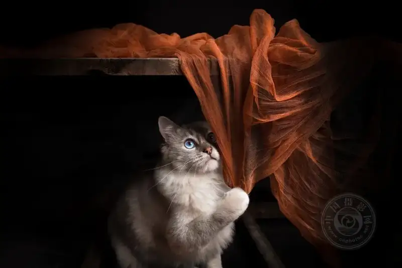
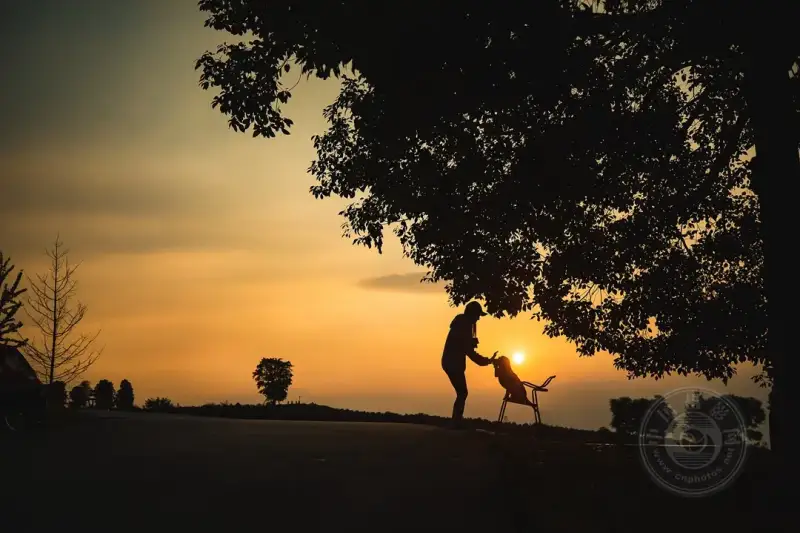
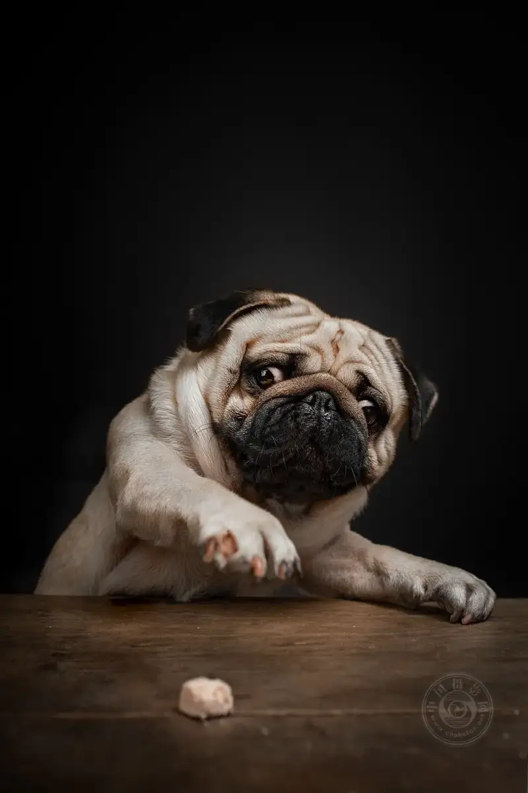
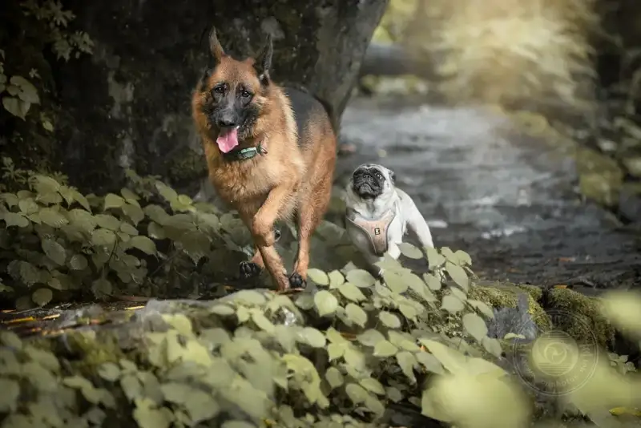
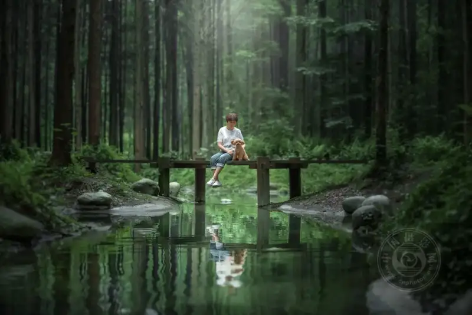
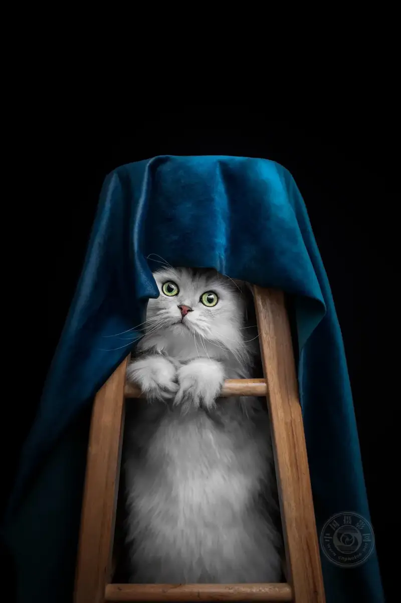
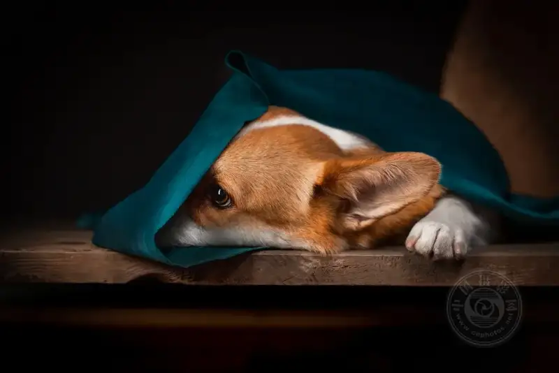
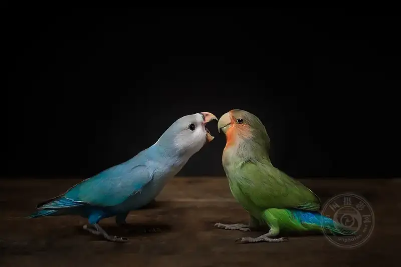
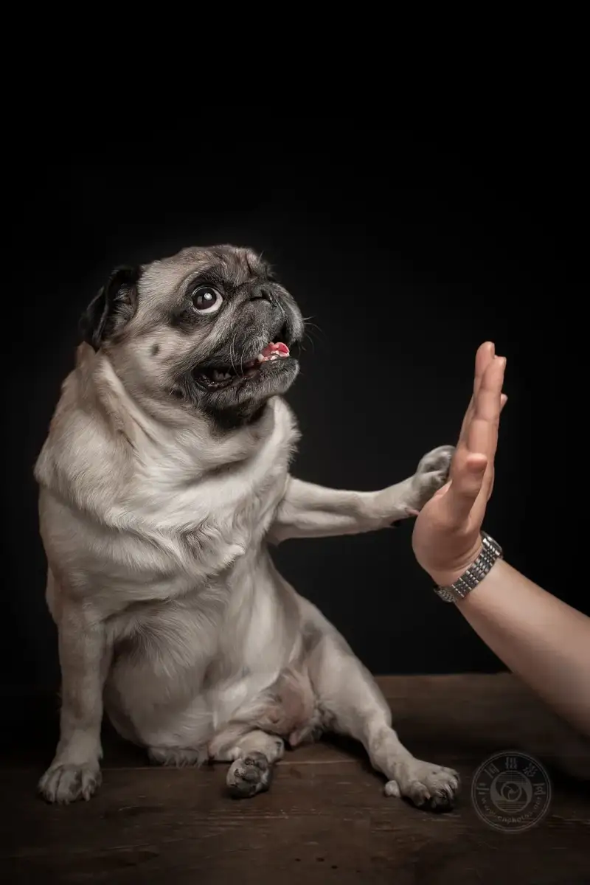
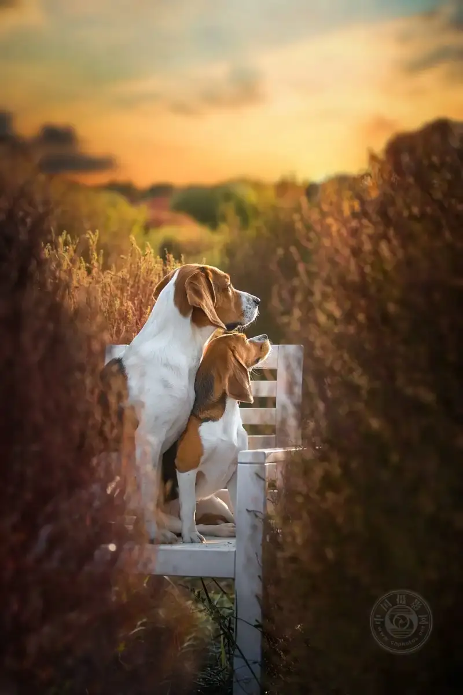
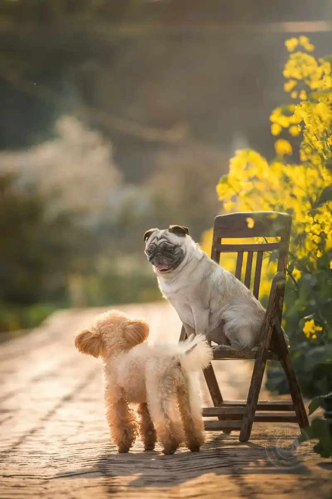
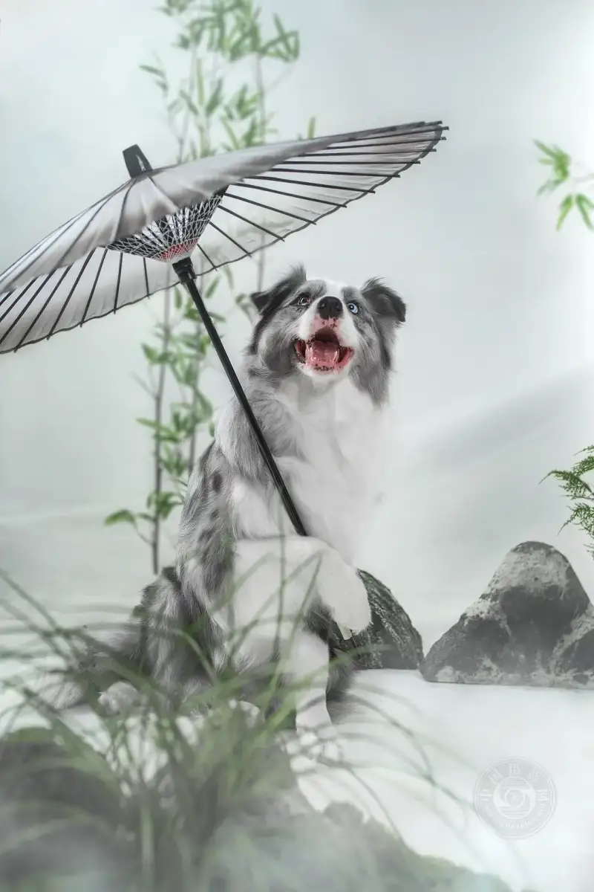
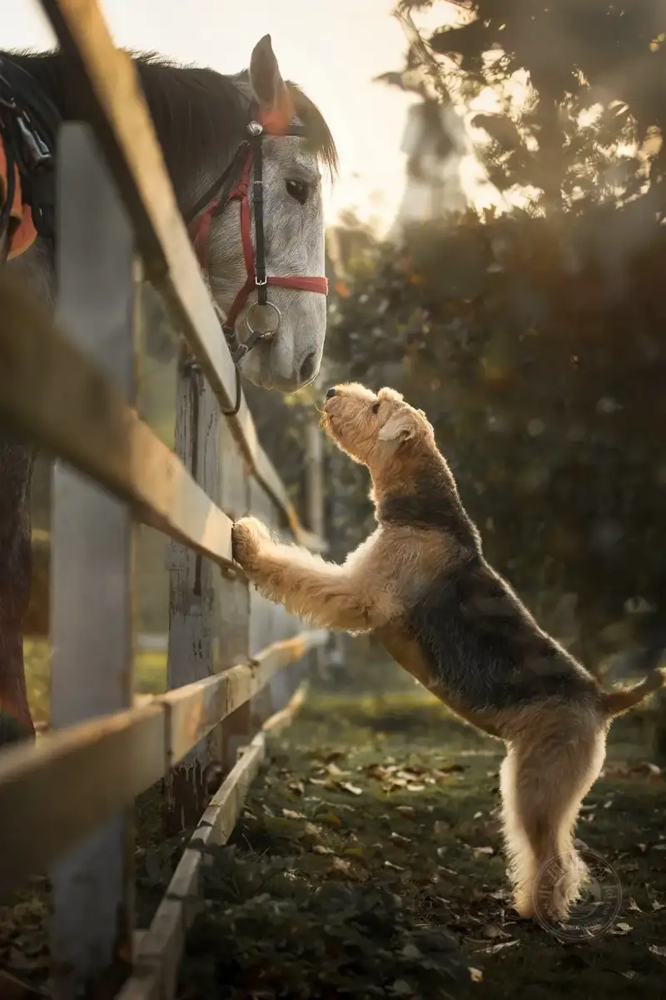
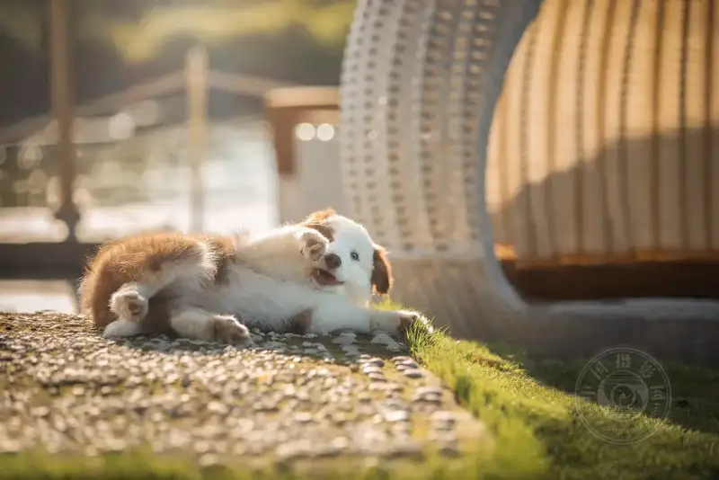
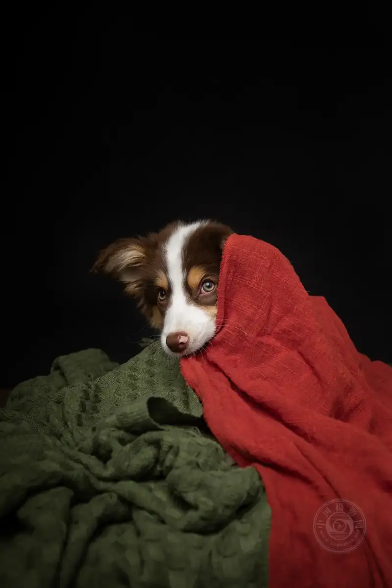
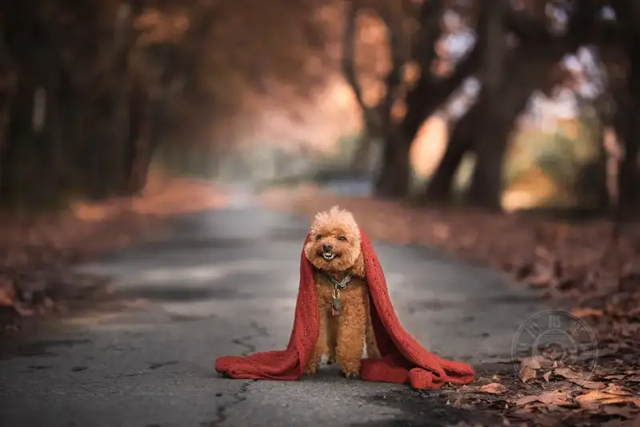
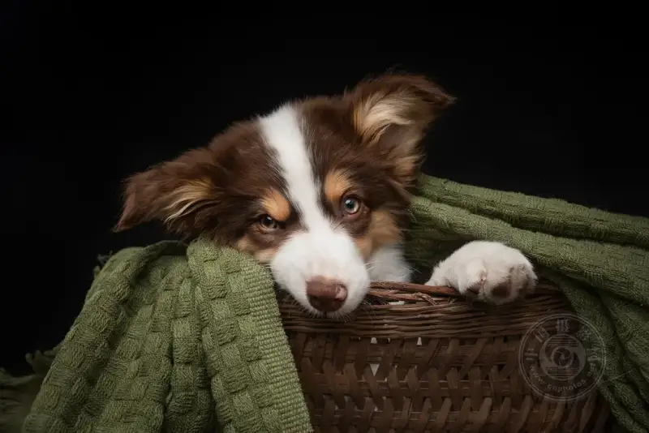